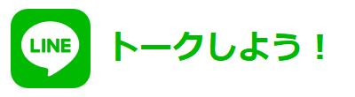

調べる
使い方
EYEと会話しよう！
EYEは防災チャットボットです。毎日、防災に関する情報を教えてくれます。時間帯によって、話す内容も変わります。気になる情報があれば、タップしてみてください。用語の説明や災害対策について、時には参考画像を示しながら、様々なことを語ってくれます。
調べる機能
雨雲レーダーや指定緊急避難場所マップ、AEDの使い方など、いざという時に役に立つ知識を身につけられるように、機能を実装しました。気になる項目について、タップしてみて下さい。
Image #1 クリックでモーダルを表示 リンク集を表示お問い合わせ
現在、EYEには以下の知識を学ばせています。覚えさせている内容
一覧
他にも防災に関して、EYEに学ばせたいこと、あなたが知りたいことはありますか？
以下より、お問い合わせを受け付けております。
お問い合わせ
開発者にて内容を精査し、EYEに学ばせていきたいと考えています。
皆様のご意見をお待ちしております。
開発者 仁志.
開発日記
シェア

